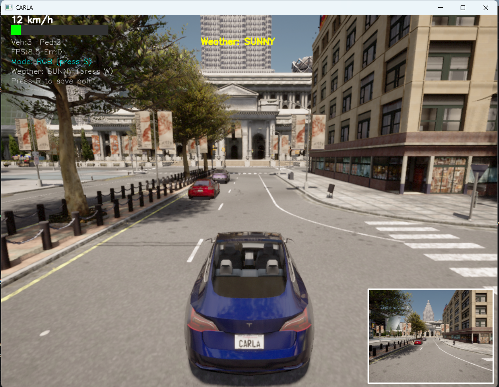
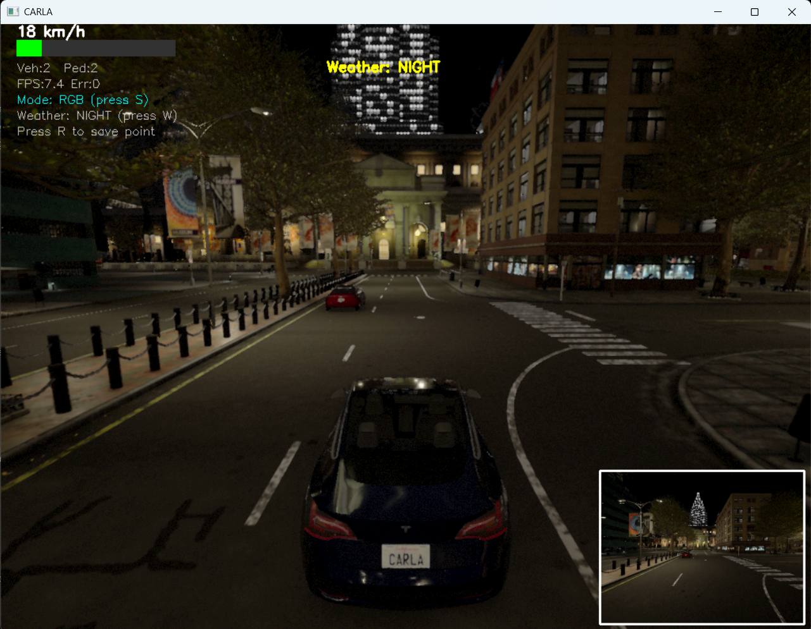
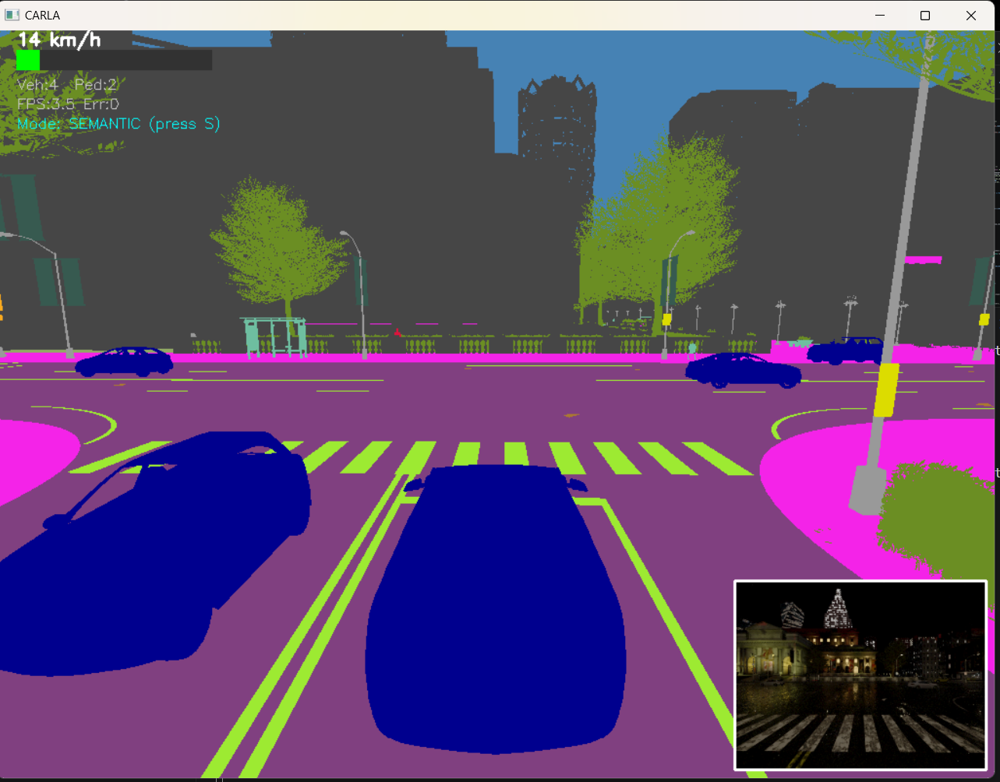
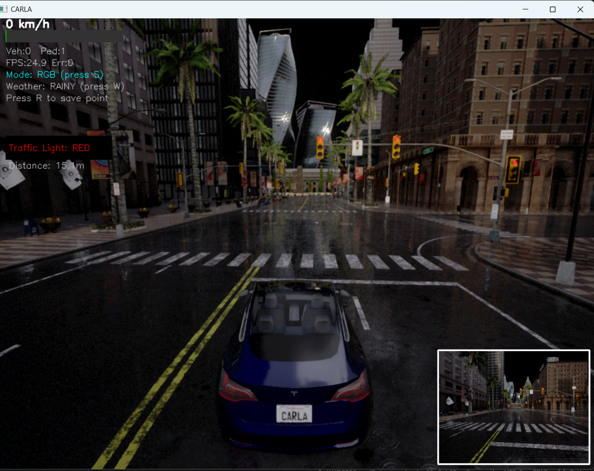
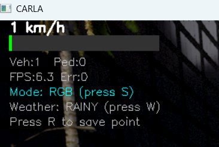

CARLA雨天多传感器自动驾驶仿真数据采集系统项目
一、项目背景与研究意义
自动驾驶感知算法高度依赖海量多场景标注数据集，实车采集存在成本高、场景受限、恶劣工况危险、难以复现碰撞场景等痛点。CARLA开源自动驾驶仿真平台可快速搭建可控虚拟交通场景，能够批量生成雨天、雾天、夜间等各类退化感知工况数据，非常适合多传感器融合感知算法的研发与验证。
本项目基于CARLA仿真平台搭建一套完整的多传感器同步数据采集与可视化仿真系统，一站式完成传感器数据同步录制、动态交通场景生成、工况切换、障碍物预警、轨迹存储等功能，为3D目标检测、多传感器时空配准、感知模型鲁棒性消融实验提供标准化数据集支撑。
二、系统整体功能
2.1 核心能力
- 模拟器对接：自动连接 CARLA，创建自动驾驶主车，支持重连容错。
- 多传感器部署：集成 RGB 相机、语义相机、激光雷达、碰撞传感器、GNSS、IMU，全维度采集感知与定位数据。
- 多环境仿真：内置晴天、大雨、雾天、夜晚四类典型场景，支持快捷键一键切换天气。
- 动态交通流：根据自车车速自适应调整车辆、行人的生成数量、刷新间隔与清除范围，模拟拥堵/常规/高速路况。
- 安全感知预警：基于激光雷达实现前方障碍物距离检测，分级触发提醒、危险告警。
- 可视化交互：实时绘制车速仪表盘、车道线、红绿灯状态，支持 RGB/语义分割视图切换。
- 数据存储：定时保存图像、点云；碰撞事件自动存档；支持手动/自动记录车辆轨迹至 CSV 文件。
- 资源管理：程序退出自动销毁所有角色、传感器，避免模拟器残留进程。
2.2 应用场景
- 自动驾驶感知算法仿真测试
- 雨天/雾天恶劣环境多传感器融合数据集采集
- 车道线检测、语义分割、3D 目标检测实验
- 障碍物预警、行车风险评估算法验证
三、运行环境
3.1 基础环境
- 操作系统：Windows / Linux
- Python 版本：3.7 ~ 3.8（CARLA 官方适配版本）
- 仿真软件：CARLA 0.9.12 及以上稳定版
3.2 依赖库
pip install opencv-python numpy
carla：模拟器原生接口，随 CARLA 安装，无需额外安装opencv-python：图像渲染、画面展示、图片读写numpy：矩阵运算、点云解析、坐标转换- 内置库：
time/os/csv/math/random/datetime等，用于路径、时间、文件管理
四、目录结构
程序自动在项目上级目录生成数据文件夹，分类存储仿真产出：
项目根目录/
├── images/ # 定时采集 RGB 图像
├── lidar/ # 定时采集激光雷达点云（.ply 格式）
├── collision/ # 碰撞触发时保存的图像+点云
├── semantic/ # 语义分割相机图像
└── trajectory/ # 车辆轨迹 CSV 文件（定位、姿态、速度、IMU 数据）
五、全局参数配置
5.1 数据保存配置
| 参数 | 取值 | 说明 |
|---|---|---|
| SAVE_INTERVAL | 300s | 自动保存传感器数据间隔（5分钟） |
| COLLISION_COOLDOWN_SEC | 3.0s | 碰撞冷却时间，短时间重复碰撞不重复存图 |
5.2 动态交通配置
| 参数 | 取值 | 说明 |
|---|---|---|
| BASE_SPAWN_INTERVAL | 5.0s | 常规车速下交通参与者生成间隔 |
| BASE_MAX_VEHICLES | 4 | 常规场景最大车辆数量 |
| BASE_MAX_PEDESTRIANS | 5 | 常规场景最大行人数量 |
| LOW_SPEED_THRESHOLD | 20 km/h | 低速阈值，低于该值切换拥堵模式 |
| HIGH_SPEED_THRESHOLD | 60 km/h | 高速阈值，高于该值切换稀疏模式 |
| SPAWN_RADIUS | 40m | 仅在自车 40 米范围内生成车辆/行人 |
| REMOVE_DISTANCE_BASE | 80m | 中/低速下，超出范围自动清除远端角色 |
| REMOVE_DISTANCE_HIGH | 120m | 高速下，扩大远端角色清除范围 |
5.3 障碍物预警配置
| 参数 | 取值 | 说明 |
|---|---|---|
| OBSTACLE_WARNING_DISTANCE | 10.0m | 预警触发距离 |
| OBSTACLE_DANGER_DISTANCE | 5.0m | 危险告警触发距离 |
| OBSTACLE_FOV_ANGLE | 60° | 前方障碍物检测视场角 |
| OBSTACLE_MAX_HEIGHT | 2.0m | 高度过滤阈值，剔除高空无效点云 |
5.4 天气预设
系统内置 4 套 CARLA 天气参数，启动默认大雨场景： 1. sunny：晴天，无雨、无雾、路面干燥 2. rainy：大雨，强降雨+路面积水+轻度雾气 3. foggy：大雾，低能见度、无降雨 4. night：夜间，弱光照、无雨无雾
|
 晴天场景（SUNNY） |

雨天场景（RAINY） |

雾天场景（FOGGY） |
 夜晚场景（NIGHT） |
图0：四种预设天气仿真效果对比
六、核心模块说明
6.1 路径与目录初始化
自动解析脚本所在路径，逐层向上定位根目录，批量创建数据存储文件夹，目录已存在则跳过，保证数据分类规整。
6.2 CARLA 连接与场景初始化
- 带重试机制连接本地 CARLA（默认端口 2000），连接失败直接退出并提示。
- 加载地图、生成自动驾驶主车，默认选用特斯拉 Model3。
- 预加载车辆、行人蓝图，过滤无效模型，为动态交通生成做准备。
6.3 动态交通生成与管理
- 角色生成：在自车周边随机生成自动驾驶车辆、带自主行走逻辑的行人，生成前检测点位是否占用，避免穿模。
- 角色清理：定时清除远离自车的车辆、行人，降低仿真算力开销。
- 自适应逻辑：根据实时车速切换拥堵/常规/高速三种模式，动态调整生成数量与间隔。
6.4 传感器部署与数据回调
传感器清单
| 传感器 | 功能 |
|---|---|
| 前置 RGB 相机 | 主视角图像采集、碰撞事件存图 |
| 跟随 RGB 相机 | 全局画面展示、车道线投影绘制 |
| 语义分割相机 | 场景语义标注数据采集 |
| 激光雷达 | 3D 点云采集、前方障碍物测距 |
| 碰撞传感器 | 监测车辆碰撞，自动存档数据 |
| GNSS | 采集经纬度、海拔定位信息 |
| IMU | 采集加速度、陀螺仪、车辆姿态角 |
回调机制
传感器采用异步回调，实时更新全局数据变量，主循环统一读取数据做可视化、计算与存储。
6.5 轨迹数据记录
- 程序启动自动创建 CSV 轨迹文件，写入标准化表头。
- 记录内容：时间戳、经纬度、海拔、三轴速度、车速、加速度、角速度、航向角、姿态角等。
- 支持两种模式：后台持续记录、按键手动单条保存。
6.6 视觉与感知算法模块
- 1. 天气切换：循环切换四类预设天气场景。 支持RGB视图 / 语义分割视图一键切换（快捷键S）。

图1：语义分割视图渲染效果，不同类别像素独立上色标注
- 2. 障碍物检测：解析激光雷达点云，筛选前方有效障碍物，计算最短距离并触发分级告警。

图2：前方障碍物近距离危险告警弹窗
- 3. 车道线绘制：利用相机内参矩阵，将世界坐标系下的车道线投影至图像画面。

图3：图像空间投影绘制车道线可视化效果
- 4. 红绿灯识别：检测前方红绿灯状态、距离，并在界面展示。

图4：红绿灯状态识别+距离实时显示界面
- 5. 仪表盘绘制：实时渲染车速、交通参与者数量、帧率、运行状态、告警提示。

图5：左侧仪表盘完整UI信息细节展示
6.7 主运行循环
系统核心死循环，逐帧执行逻辑： 1. 获取自车位置、姿态、车速，更新动态交通参数。 2. 激光雷达障碍物检测，更新告警状态。 3. 定时生成、清除交通参与者。 4. 合成画面，根据视图模式渲染图像、车道线、仪表盘。 5. 监听键盘指令，响应交互操作。 6. 到达时间阈值，自动保存图像、点云数据。 7. 异常捕获与帧率统计，保证程序稳定运行。
6.8 资源释放模块
程序正常/异常退出时统一执行清理操作：关闭图像窗口、关闭轨迹文件、停止并销毁所有传感器、车辆、行人及AI控制器，释放 CARLA 仿真资源。
七、交互快捷键
在仿真画面窗口内按下按键实现功能切换： | 按键 | 功能 | | ---- | ---- | | Q / ESC | 退出程序，自动清理所有资源 | | S / s | 切换显示模式：RGB 视图 ↔ 语义分割视图 | | W / w | 循环切换天气场景 | | R / r | 手动保存当前时刻轨迹数据至 CSV |
八、标准运行流程
- 启动 CARLA 模拟器，等待场景加载完成。
- 运行 Python 脚本，程序自动连接模拟器、生成车辆与传感器。
- 等待传感器初始化完成，弹出仿真画面。
- 主车自动行驶，系统后台采集数据、模拟交通流。
- 根据需求使用快捷键切换天气、视图、手动保存轨迹。
- 按下
Q/ESC退出程序，自动清理仿真角色。
九、数据输出说明
9.1 定时自动数据
- RGB 图像：
images/目录，时间戳命名 PNG 图片 - 语义图像：
semantic/目录，语义分割标注图 - 激光雷达：
lidar/目录，标准.ply点云文件，支持 CloudCompare 等工具打开
9.2 碰撞触发数据
发生碰撞时，自动在 collision/ 保存碰撞瞬间图像与点云，控制台同步打印碰撞力度。
9.3 轨迹数据
trajectory/ 目录下 CSV 文件，完整记录车辆运动、定位、姿态数据，可直接用于数据分析与算法训练。
十、常见问题排查
- 无法连接 CARLA 检查模拟器是否启动、端口是否为默认 2000，关闭防火墙拦截。
- 传感器无数据 电脑性能不足导致模拟器帧率过低，重启 CARLA 与脚本。
- 车辆/行人不生成
地图生成点不足，适当调大
SPAWN_RADIUS参数。 - 画面严重卡顿 降低相机分辨率、减少传感器数量、下调交通参与者最大数量。
十一、项目拓展方向（结合雨天多传感器融合课题）
结合《基于深度学习置信度加权的自动驾驶雨天多传感器融合感知优化》项目，可基于本系统二次开发： 1. 采集不同雨强、雾浓度下相机、激光雷达数据，制作恶劣天气多模态数据集。 2. 提取传感器特征，对接深度学习模型，实现动态置信权重分配仿真验证。 3. 结合障碍物距离、车速、天气参数设计风险评分模型，输出减速、告警等驾驶决策。 4. 增加数据标注功能，完成 3D 检测框、传感器退化特征标注。 5. 接入多目标跟踪算法，实现连续帧目标轨迹分析。